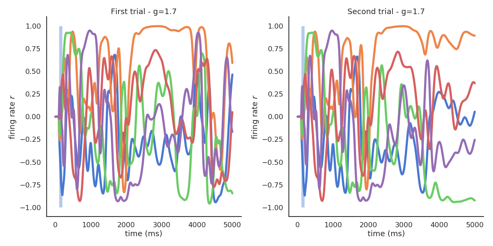

3. Reservoir computing¶
Slides: pdf
The concept of Reservoir Computing (RC) was developed simultaneously by two researchers at the beginning of the 2000s. RC builds on the idea of Hopfield networks but focuses on the dynamics rather than on the fixed points. Herbert Jaeger (Uni Bremen) introduced echo-state networks (ESN) using rate-coded neurons [Jaeger, 2001]. Wolfgang Maass (TU Graz) introduced liquid state machines (LSM) using spiking neurons [Maass et al., 2002].
3.1. Echo-state networks (ESN)¶
3.1.1. Structure¶
An ESN is a set of recurrent units (sparsely connected) exhibiting complex spatiotemporal dynamics.
{kind=link}
Fig. 3.82 Structure of an echo-state network. Source: [Tanaka et al., 2019].¶
Rate-coded neurons in the reservoir integrate inputs and recurrent connections using an ODE:
The output of a neuron uses the tanh function (between -1 and 1):
Readout neurons (or output neurons) transform linearly the activity in the reservoir:
In the original version of the ESN, only the readout weights are learned, not the recurrent ones. One can use supervised learning to train the readout neurons to reproduce desired targets.
Inputs \(\mathbf{I}(t)\) bring the recurrent units in a given state (like the bias in Hopfield networks). The recurrent connections inside the reservoir create different dynamics \(\mathbf{r}(t)\) depending on the strength of the weight matrix. Readout neurons linearly transform the recurrent dynamics into temporal outputs \(\mathbf{z}(t)\). Supervised learning (perceptron, LMS) trains the readout weights to reproduce a target \(\mathbf{t}(t)\). It is similar to a MLP with one hidden layer, but the hidden layer has dynamics.
Reservoirs only need a few hundreds of units in the reservoir to learn complex functions (e.g. \(N=200\)). The recurrent weights are initialized randomly using a normal distribution with mean 0 and deviation \(\frac{g}{\sqrt{N}}\):
\(g\) is a scaling factor characterizing the strength of the recurrent connections, what leads to different dynamics.
The recurrent weight matrix is often sparse: A subset of the possible connections \(N \times N\) has non-zero weights. Typically, only 10% of the possible connections are created.
3.1.2. Dynamics and edge of chaos¶
Depending on the value of \(g\), the dynamics of the reservoir exhibit different attractors. Let’s have a look at the activity of a few neurons after the presentation of a short input.
When \(g<1\), the network has no dynamics: the activity quickly fades to 0 when the input is removed.

For \(g=1\), the reservoir exhibits some transcient dynamics but eventually fades to 0 (echo-state property).

For \(g=1.5\), the reservoir exhibits many stable attractors due to its rich dynamics (Hopfield-like).
For higher values of \(g\), there are no stable attractors anymore: chaotic behavior.
For \(g = 1.5\), different inputs (initial states) lead to different attractors.

The weight matrix must have a scaling factor above 1 to exhibit non-zero attractors.

For a single input, the attractor is always the same, even in the presence of noise or perturbations.
In the chaotic regime, the slightest uncertainty on the initial conditions (or the presence of noise) produces very different trajectories on the long-term.

The chaotic regime appears for \(g > 1.5\). \(g=1.5\) is the edge of chaos: the dynamics are very rich, but the network is not chaotic yet.
{kind=link}
Lorenz attractor
The Lorenz attractor is a famous example of a chaotic attractor. The position \(x, y, z\) of a particle is describe by a set of 3 deterministic ordinary differential equations:
The resulting trajectories over time have complex dynamics and are chaotic: the slightest change in the initial conditions generates different trajectories.
3.1.3. Universal approximation¶
Using the reservoir as input, the linear readout neurons can be trained to reproduce any non-linear target signal over time:
As it is a regression problem, the delta learning rule (LMS) is often enough.
from sklearn import linear_model
reg = linear_model.LinearRegression()
reg.fit(r, t)

Reservoirs are universal approximators: given enough neurons in the reservoir and dynamics at the edge of the chaos, a RC network can approximate any non-linear function between an input signal \(\mathbf{I}(t)\) and a target signal \(\mathbf{t}(t)\).
The reservoir projects a low-dimensional input into a high-dimensional spatio-temporal feature space where trajectories becomes linearly separable. The reservoir increases the distance between the input patterns. Input patterns are separated in both space (neurons) and time: the readout neurons need much less weights than the equivalent MLP: better generalization and faster learning. The only drawback is that it does not deal very well with high-dimensional inputs (images).
{kind=link}
Fig. 3.83 Spatio-temporal pattern separation. Source: Seoane, L. F. (2019). Evolutionary aspects of reservoir computing. Philosophical Transactions of the Royal Society B. doi:10.1098/rstb.2018.0377.¶
The output of the readout neurons can be fed back into the reservoir to stabilize the trajectories:
This makes the reservoir much more robust to perturbations, especially at the edge of chaos. The trajectories are more stable (but still highly dynamical), making the job of the readout neurons easier.
3.1.4. Applications¶
Forecasting: ESN are able to predict the future of chaotic systems (stock market, weather) much better than static NN.
{kind=link}
Fig. 3.84 Forecasting. Source: https://towardsdatascience.com/predicting-stock-prices-with-echo-state-networks-f910809d23d4¶
Physics: RC networks can be used to predict the evolution of chaotic systems (Lorenz, Mackey-Glass, Kuramoto-Sivashinsky) at very long time scales (8 times the Lyapunov time).

Fig. 3.85 Prediction of chaotic systems. Source: Pathak, J., Hunt, B., Girvan, M., Lu, Z., and Ott, E. (2018). Model-Free Prediction of Large Spatiotemporally Chaotic Systems from Data: A Reservoir Computing Approach. Physical Review Letters 120, 024102–024102. doi:10.1103/PhysRevLett.120.024102.¶
NLP: RC networks can grasp the dynamics of language, i.e. its grammar. RC networks can be trained to produce predicates (“hit(Mary, John)”) from sentences (“Mary hit John” or “John was hit by Mary”)

Fig. 3.86 Reservoirs for language understanding. Source: Hinaut, X., and Dominey, P. F. (2013). Real-Time Parallel Processing of Grammatical Structure in the Fronto-Striatal System: A Recurrent Network Simulation Study Using Reservoir Computing. PLOS ONE 8, e52946. doi:10.1371/journal.pone.0052946.¶
The cool thing with reservoirs is that they do not have to be simulated by classical von Neumann architectures (CPU, GPU). Anything able to exhibit dynamics at the edge of chaos can be used: VLSI (memristors), magnetronics, photonics (lasers), spintronics (nanoscale electronics)… This can limit drastically the energy consumption of ML algorithms (200W for a GPU). Even biological or physical systems can be used…
{kind=link}
Fig. 3.87 Memristor-based RC networks. Source: [Tanaka et al., 2019].¶

Fig. 3.88 A bucket of water can be used as a reservoir. Different motors provide inputs to the reservoir by creating weights. The surface of the bucket is recorded and used as an input to a linear algorithm. It can learn non-linear operations (XOR) or even speech recognition.. Source: Fernando, C., and Sojakka, S. (2003). Pattern Recognition in a Bucket. in Advances in Artificial Life Lecture Notes in Computer Science. doi:10.1007/978-3-540-39432-7_63.¶
Real biological neurons can be kept alive in a culture and stimulated /recorded to implement a reservoir.
{kind=link}
Fig. 3.89 Reservoir of biological neurons. Source: Frega, M., Tedesco, M., Massobrio, P., Pesce, M., and Martinoia, S. (2014). Network dynamics of 3D engineered neuronal cultures: a new experimental model for in-vitro electrophysiology. Scientific Reports 4, 1–14. doi:10.1038/srep05489.¶
Escherichia Coli bacteria change their mRNA in response to various external factors (temperature, chemical products, etc) and interact with each other. Their mRNA encode a dynamical trajectory reflecting the inputs. By placing them on a microarray, one can linearly learn to perform non-linear operations on the inputs.
{kind=link}
Fig. 3.90 Reservoir of e-coli bacteria. Source: Jones, B., Stekel, D., Rowe, J., and Fernando, C. (2007). Is there a Liquid State Machine in the Bacterium Escherichia Coli? in 2007 IEEE Symposium on Artificial Life, 187–191. doi:10.1109/ALIFE.2007.367795.¶
ESN use the tanh activation function (between -1 and +1) and the weights can take any value.
In the brain, neurons are either excitatory (positive outgoing weights) or inhibitory (negative outgoing weights), never both (Dale’s law).
Firing rates (outputs) are positive by definition.
It is possible to build ESN with a ratio 80% / 20% of excitatory and inhibitory cells, using ReLU transfer functions. A bit less stable, but works.
{kind=link}
Fig. 3.91 Excitatory-inhibitory reservoir. Source: Mastrogiuseppe, F., and Ostojic, S. (2017). Intrinsically-generated fluctuating activity in excitatory-inhibitory networks. PLOS Computational Biology 13, e1005498–e1005498. doi:10.1371/journal.pcbi.1005498.¶
RC networks can be used to model different areas, including the cerebellum, the olfactory system, the hippocampus, cortical columns, etc. The brain has a highly dynamical recurrent architecture, so RC provides a good model of brain dynamics.
{kind=link}
Fig. 3.92 Reservoirs are useful in computational neuroscience. Source: Cayco-Gajic, N. A., and Silver, R. A. (2019). Re-evaluating Circuit Mechanisms Underlying Pattern Separation. Neuron 101, 584–602. doi:10.1016/j.neuron.2019.01.044.¶
3.2. Taming chaos (optional)¶
In classical RC networks, the recurrent weights are fixed and only the readout weights are trained. The reservoir dynamics are fixed by the recurrent weights, we cannot change them. Dynamics can be broken by external perturbations or high-amplitude noise. The edge of chaos is sometimes too close. If we could learn the recurrent weights, we could force the reservoir to have fixed and robust trajectories.

Fig. 3.93 Classical RC networks have fixed recurrent weights. Source: [Sussillo & Abbott, 2009].¶
Below a classical network is trained to reproduce handwriting. The two readout neurons produce a sequence of \((x, y)\) positions for the pen. It works quite well when the input is not perturbed. If some perturbation enters the reservoir, the trajectory is lost.
We have an error signal \(\mathbf{t}_t - \mathbf{z}_t\) at each time step. Why can’t we just apply backpropagation (through time) on the recurrent weights?

Fig. 3.94 Learning the recurrent weights can stabilize trajectories at the edge of chaos. Source: [Sussillo & Abbott, 2009].¶
BPTT is too unstable: the slightest weight change impacts the whole dynamics. In FORCE learning [Sussillo & Abbott, 2009], complex optimization methods such as recursive least squares (RLS) have to be used. For the readout weights:
where \(P\) is the inverse correlation matrix of the input :

Fig. 3.95 FORCE learning allows to train readout weights to reproduce compley or even chaotic signals. Source: [Sussillo & Abbott, 2009].¶
For the recurrent weights, we need also an error term [Laje & Buonomano, 2013]. It is computed by recording the dynamics during an initialization trial \(\mathbf{r}^*_t\) and force the recurrent weights to reproduce these dynamics in the learning trials:
\(P\) is the correlation matrix of recurrent activity. See https://github.com/ReScience-Archives/Vitay-2016 for a reimplementation.
This allows to stabilize trajectories in the chaotic reservoir (taming chaos) and generate complex patterns even in the presence of perturbations.

Fig. 3.96 FORCE learning allows to train recurrent weights. Source: [Laje & Buonomano, 2013].¶
{kind=link}
Fig. 3.97 FORCE learning stabilizes trajectories. Source: [Laje & Buonomano, 2013].¶